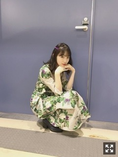
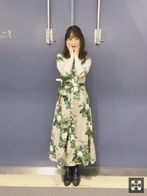
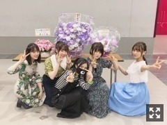
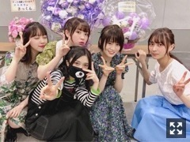

2018/0617Sun牛タンを食べずして帰るなんて。
あー
牛タン食べれなかったよ。
でも仙台好きです(｡･ω･｡)
夏のツアーで来た時は
たくさんたくさん食べさせてもらうね！
隣にはみり愛がいるなう
久しぶりのみり愛〜うふふ〜
今日は
ZARAのシャツワンピを着ました〜


トロピカル。
さくらんぼも食べました☺︎


わらわら集まって話しして
2期仲よすぎィ
笑い止まらんかった！
今度この蘭世のマスクみんなで買って
付けます。笑
来週の握手会もよろしくね。
あと、明日
真夏さんが体調不良の為
私が代わりにshowroomに
出させていただきます！
よかったら見てください(｡･ω･｡)
じゃね
2018/06/17 22:01
コメント(409)
自分も牛タン食べなかったww
でも全ツで仙台にまた来るから
その時は牛タン食べる(*´∇｀*)
さくらんぼいいね！
今度はそのマスクみんなで付けたら
面白いねww
showroom見ますヽ(´ー｀)
でも全ツで仙台にまた来るから
その時は牛タン食べる(*´∇｀*)
さくらんぼいいね！
今度はそのマスクみんなで付けたら
面白いねww
showroom見ますヽ(´ー｀)
更新ありがとうございます！
仙台での握手会お疲れ様です！
仙台＝牛タンなんですね笑よく食べますね笑
僕も9月2日の宮城でのライブ行くのでその時食べてみます！今から楽しみです！！
明日のshowroom絶対にみます！
何時からですか？？
仙台での握手会お疲れ様です！
仙台＝牛タンなんですね笑よく食べますね笑
僕も9月2日の宮城でのライブ行くのでその時食べてみます！今から楽しみです！！
明日のshowroom絶対にみます！
何時からですか？？
堀ちゃん、握手会お疲れ様
久しぶりのshowroom、絶対見ます！！！
久しぶりのshowroom、絶対見ます！！！
未央奈ブログ更新ありがとう。
牛タン食べれなかったのは本当に悔いが残るね・・・
食べ物の恨みは恐ろしや〜！
マネージャーさん夏のツアーは未央奈が無事に牛タンを食べれるように調整して下さい。
本当にお仕事忙しいと思うけど、過度な無理だけはしないでね。
牛タン食べれなかったのは本当に悔いが残るね・・・
食べ物の恨みは恐ろしや〜！
マネージャーさん夏のツアーは未央奈が無事に牛タンを食べれるように調整して下さい。
本当にお仕事忙しいと思うけど、過度な無理だけはしないでね。
ブログ更新ありがとー！！
2期生仲いいね〜蘭世のマスクが気になるな笑
明日のSHOWROOM絶対見るね！
ひろっぴー
2期生仲いいね〜蘭世のマスクが気になるな笑
明日のSHOWROOM絶対見るね！
ひろっぴー
showroomみるねー！
堀ちゃん
今日の握手会お疲れ様でした
牛タン食べられなくて残念でしたね
次に来る時まで代わりにステーキでも食べて頑張って下さい
ZARAのワンピースとても大人な感じですね（前回のはっぴのオフ感とは違うよさがある）
明日のまなったんの代わりのshowroomは時間にもよりますが間に合えば観ます
今日は疲れたと思うのでしっかり休養をとって下さい
そして明日からも頑張ろう！
寝ます
ありがとうございました
今日の握手会お疲れ様でした
牛タン食べられなくて残念でしたね
次に来る時まで代わりにステーキでも食べて頑張って下さい
ZARAのワンピースとても大人な感じですね（前回のはっぴのオフ感とは違うよさがある）
明日のまなったんの代わりのshowroomは時間にもよりますが間に合えば観ます
今日は疲れたと思うのでしっかり休養をとって下さい
そして明日からも頑張ろう！
寝ます
ありがとうございました
未央奈ちゃんお疲れさま
牛タン食べれなくて残念でしたねぇ
変わりに僕が食べときます。
ワンピース可愛いい
showroomみれるかなぁ
未央奈ちゃんお仕事頑張ってねぇ
牛タン食べれなくて残念でしたねぇ
変わりに僕が食べときます。
ワンピース可愛いい
showroomみれるかなぁ
未央奈ちゃんお仕事頑張ってねぇ
牛タン今度食べれるといいね!
showroom見るっ
今日もお疲れ様～
showroom見るっ
今日もお疲れ様～
未央奈ー！ブログ更新ありがとう！
明日のSHOWROOMでるの！まなったんは早く良くなって欲しいけど未央奈がでてくれるのは嬉しいな
絶対みる！と思うけど塾で見れないかもごめんね；；；；
2期仲よすぎィ！最高！
明日のSHOWROOMでるの！まなったんは早く良くなって欲しいけど未央奈がでてくれるのは嬉しいな
絶対みる！と思うけど塾で見れないかもごめんね；；；；
2期仲よすぎィ！最高！
ブログ更新ありがとう！
牛タン食べなかったのねー笑
みんな体調崩してるから心配！
体が一番だからね！体には気をつけてがんばってください！
牛タン食べなかったのねー笑
みんな体調崩してるから心配！
体が一番だからね！体には気をつけてがんばってください！
あ、明日のSR未央奈が代わりにやるんやね！
真夏さんには少しでもゆっくりしてもらって早く元気になってもらいたいです…
ってことで明日のSRめっちゃ楽しみにして待ってます！
真夏さんには少しでもゆっくりしてもらって早く元気になってもらいたいです…
ってことで明日のSRめっちゃ楽しみにして待ってます！
えー！Σ（￣□￣;）
あのみおなちゃんが
牛タン食べずに帰るなんて！(笑)
シャツワンピ、
こういう着こなし、好きだなー。
やり過ぎない感じ？(笑)
画像のリンクがうまくいってなくて
拡大できないのが残念。
握手会、お疲れ様でした！
あのみおなちゃんが
牛タン食べずに帰るなんて！(笑)
シャツワンピ、
こういう着こなし、好きだなー。
やり過ぎない感じ？(笑)
画像のリンクがうまくいってなくて
拡大できないのが残念。
握手会、お疲れ様でした！
いつでも僕のお店に牛たん食べおいで！！
SHOWROOM楽しみにしてるね！！
SHOWROOM楽しみにしてるね！！
初めて個握でした。
みんな可愛くてびっくりしました‼️
また未央奈のレーンにならびます。
みんな可愛くてびっくりしました‼️
また未央奈のレーンにならびます。
牛タンおいしいよね！
さすが未央奈！食べ物といえば未央奈だよ(笑)
二期生仲良し！！大好きです❤️
さすが未央奈！食べ物といえば未央奈だよ(笑)
二期生仲良し！！大好きです❤️
こんばんは。
牛タン、残念でしたね。
食べて笑顔になって欲しかったですが。。
楽しみは次回にとっておきましょう！
さくらんぼ、良いですね。
写真可愛いです。
SHOWROOM期待してます。
頑張って行きましょう！
牛タン、残念でしたね。
食べて笑顔になって欲しかったですが。。
楽しみは次回にとっておきましょう！
さくらんぼ、良いですね。
写真可愛いです。
SHOWROOM期待してます。
頑張って行きましょう！
未央奈！
握手会お疲れ様です！
次のシングル発売されたときは行きたいなー。
牛タン食べられなかったんですか。
昨日楽しみにしてそうだったので残念ですね。
食べられる時にいっぱい食べてね。
2期生、仲良いですね！
微笑ましいです！
それと明日のshowroom、19時半かららしいですが、残念ながらバイトで見られません、、、
見たいなーーー。
でも楽しんで放送してくださいね！
握手会お疲れ様です！
次のシングル発売されたときは行きたいなー。
牛タン食べられなかったんですか。
昨日楽しみにしてそうだったので残念ですね。
食べられる時にいっぱい食べてね。
2期生、仲良いですね！
微笑ましいです！
それと明日のshowroom、19時半かららしいですが、残念ながらバイトで見られません、、、
見たいなーーー。
でも楽しんで放送してくださいね！
ほりっぴー！
ブログ更新ありがとう♡
握手会お疲れ様(๑˃̵ᴗ˂̵)و
明日showroom必ずみるね〜♡
ブログ更新ありがとう♡
握手会お疲れ様(๑˃̵ᴗ˂̵)و
明日showroom必ずみるね〜♡
おつかれたん。
牛タン(≧∀≦)
大好きです。
牛タン(≧∀≦)
大好きです。
未央奈ちゃんブログ更新ありがとう
握手会お疲れ様
可愛い
明日showroom見るね
斉藤貴巳
握手会お疲れ様
可愛い
明日showroom見るね
斉藤貴巳
仙台握手会、お疲れ様！
未央奈☆ミこんばんわい☺️
牛タン、次回におわづけってことで...(笑)
ガッカリのさきには...
代わりに、
れなちが持ってる
さくらんぼ、爆食いですね(笑)
冗談冗談(笑)
さくらんぼって仙台では有名果物なの？
勉強不足で(笑)
けど、美味しそうですね☺️
みんなとのピース✌️写メ
仲良しなのが全面に感じとれて
とてもいい光景でした
ただ！ただ！！
蘭世のマスクが...(笑)
２期生みんな大好き
堀ちゃんの着ているワンピ
緑と紫のコントラストが良くでてて
すごく綺麗でお似合いです
ありがとね❤️
んじゃ、
明日のshowroomで逢いましょう(笑)
未央奈、いつもいつも更新ありがとう
ずっとずっとずーーーと応援するから✌️
体に気を付けてください。
それじゃ、またね✋☺️
おやすみん☆ミ
ばい茶(笑)
未央奈☆ミこんばんわい☺️
牛タン、次回におわづけってことで...(笑)
ガッカリのさきには...
代わりに、
れなちが持ってる
さくらんぼ、爆食いですね(笑)
冗談冗談(笑)
さくらんぼって仙台では有名果物なの？
勉強不足で(笑)
けど、美味しそうですね☺️
みんなとのピース✌️写メ
仲良しなのが全面に感じとれて
とてもいい光景でした
ただ！ただ！！
蘭世のマスクが...(笑)
２期生みんな大好き
堀ちゃんの着ているワンピ
緑と紫のコントラストが良くでてて
すごく綺麗でお似合いです
ありがとね❤️
んじゃ、
明日のshowroomで逢いましょう(笑)
未央奈、いつもいつも更新ありがとう
ずっとずっとずーーーと応援するから✌️
体に気を付けてください。
それじゃ、またね✋☺️
おやすみん☆ミ
ばい茶(笑)
未央奈☆ミ
こんばんはー(^-^)/
仙台握手会、お疲れさま。
愛しい牛タン、食べられないなんて.....。
夏のツアーで！たら腹食べてくださいな(笑)
今日のトロピカルワンピ
コーディネート100点☺️
あ！乃木カラーが入ってたので120点です(笑)
すごくお似合いですよ✨。
崎さん、堀ちゃんに、さくらんぼなう(笑)
堀返し(笑)｡:+((*´艸`))+:｡
仲良し２期生にlove❤️
次回！
みんな蘭世のマスクでお待ちしてます(笑)
仲のいい２期生写真ありがとう
明日のshowroom観るよ～✌️☺️✌️
未央奈、いつも更新ありがとう(*^ー^)ノ♪
体調に気をつけてね。
またね。ばいプー(⌒0⌒)／~~
おやすみ☆ミ、ライブ神 (笑)
(笑)
こんばんはー(^-^)/
仙台握手会、お疲れさま。
愛しい牛タン、食べられないなんて.....。
夏のツアーで！たら腹食べてくださいな(笑)
今日のトロピカルワンピ
コーディネート100点☺️
あ！乃木カラーが入ってたので120点です(笑)
すごくお似合いですよ✨。
崎さん、堀ちゃんに、さくらんぼなう(笑)
堀返し(笑)｡:+((*´艸`))+:｡
仲良し２期生にlove❤️
次回！
みんな蘭世のマスクでお待ちしてます(笑)
仲のいい２期生写真ありがとう
明日のshowroom観るよ～✌️☺️✌️
未央奈、いつも更新ありがとう(*^ー^)ノ♪
体調に気をつけてね。
またね。ばいプー(⌒0⌒)／~~
おやすみ☆ミ、ライブ神
みおなー！おつかれさま！
ゆっくり休んでね！
あしたのSHOWROOM楽しみにしてるよ〜
ゆっくり休んでね！
あしたのSHOWROOM楽しみにしてるよ〜
ブログ更新ありがとう！
握手会お疲れさまでした！ちょっぴり
疲れがお顔に見えました、、しっかり休んで
無理せずしてください！
東北新幹線乗れましたか？？帰宅難民なうです泣
お疲れさまでしたおやすみなさい！
握手会お疲れさまでした！ちょっぴり
疲れがお顔に見えました、、しっかり休んで
無理せずしてください！
東北新幹線乗れましたか？？帰宅難民なうです泣
お疲れさまでしたおやすみなさい！
最近、個握行けてないわー(￣∀￣)
未央奈お疲れ様~
牛タンめっちゃ好きや美味しいよね
showroom絶対見るわ~
牛タンめっちゃ好きや美味しいよね
showroom絶対見るわ~
まなったん出られないの残念だけど、未央奈ちゃんも大好きなのでshowroom見ます〜。
堀ちゃん、ブログ更新ありがとう。
1日握手会お疲れ様。
牛タン食べられなくて残念だね。
全国ツアーでたくさん食べられるといいね。
また、明日のshow roomみるね。
1日握手会お疲れ様。
牛タン食べられなくて残念だね。
全国ツアーでたくさん食べられるといいね。
また、明日のshow roomみるね。
握手会お疲れ様！
牛タンは残念だったね、
次は食べれますように！！
SHOWROOM、
時間合うかなぁ…？
早く帰れるように頑張りまーす！
牛タンは残念だったね、
次は食べれますように！！
SHOWROOM、
時間合うかなぁ…？
早く帰れるように頑張りまーす！
こんばんは
牛タン食べられなくて残念だね
でも2期生みんなと話をして楽しめたようで何より、2期生好き。
明日のショウルーム楽しみしてるよ！握手会続いてるし体調には気を付けてまたね
牛タン食べられなくて残念だね
でも2期生みんなと話をして楽しめたようで何より、2期生好き。
明日のショウルーム楽しみしてるよ！握手会続いてるし体調には気を付けて
未央奈さん
SHOWROOM 観ます。生未央奈楽しみや～
では また｡
SHOWROOM 観ます。生未央奈楽しみや～
では また｡
お疲れさまでした。
新幹線が止まっていたようで、大変でしたね。
まなったんも心配です。
未央奈もしっかり休んで下さいね。
新幹線が止まっていたようで、大変でしたね。
まなったんも心配です。
未央奈もしっかり休んで下さいね。
未央奈〜ブログ更新ありがとう
今日の握手会お疲れ様！
本当2期生仲いいね!
また来週の握手会も楽しんでね♪
SHOWROOMも見るよー!!
牛タンむっちゃ美味いけど
筋とか硬くてなんか
味がわからない（笑）
おやすみ〜
今日の握手会お疲れ様！
本当2期生仲いいね!
また来週の握手会も楽しんでね♪
SHOWROOMも見るよー!!
牛タンむっちゃ美味いけど
筋とか硬くてなんか
味がわからない（笑）
おやすみ〜
今日の握手会で
甥っ子を可愛がって頂いてありがとうございます✨
すっかり
堀ちゃん推しになってました
甥っ子を可愛がって頂いてありがとうございます✨
すっかり
堀ちゃん推しになってました
握手会お疲れ！
ZARAのtシャツ買おっかなぁ
二期仲良くて良き
来週は行くからな！！待っときんしゃい！
showroomぜってー見る！あー楽しみ
ZARAのtシャツ買おっかなぁ
二期仲良くて良き
来週は行くからな！！待っときんしゃい！
showroomぜってー見る！あー楽しみ
未央奈ー！
更新ありがと(*^^*)
握手会お疲れさま。
牛タン食べれなかったの残念だね(´･･`)
シャツワンピ可愛い。未央奈にすごい似合ってる！
２期生とわちゃわちゃしてるの好きです(´-`)
真夏さん体調不良なんだね、心配です…
showroom時間あったら観に行くね！
ブログまた待ってます！おやすみ♪
更新ありがと(*^^*)
握手会お疲れさま。
牛タン食べれなかったの残念だね(´･･`)
シャツワンピ可愛い。未央奈にすごい似合ってる！
２期生とわちゃわちゃしてるの好きです(´-`)
真夏さん体調不良なんだね、心配です…
showroom時間あったら観に行くね！
ブログまた待ってます！おやすみ♪
堀ちゃん仙台寒かったでしょー？？
風邪ひかないでね～
明日のshowroom楽しみ！
間に合えばいいなぁ
風邪ひかないでね～
明日のshowroom楽しみ！
間に合えばいいなぁ
みおなちゃんも
堀ちゃん可愛いすぎます！！
牛タン最高ですよねヽ(*´∀｀)
親父がお土産で買ってきて食べたことあります！！
分厚くてジューシーで美味しかったです！！
いやぁ〜やっぱ最高です！！牛タン！！
牛タン最高ですよねヽ(*´∀｀)
親父がお土産で買ってきて食べたことあります！！
分厚くてジューシーで美味しかったです！！
いやぁ〜やっぱ最高です！！牛タン！！
仙台は寒かったんじゃない？風邪引かんようにね(^^)
堀ちゃんこんにちは！
れなちとのツーショットの堀ちゃんめちゃくちゃ可愛い！！
いつも可愛い人でも飛び抜けて可愛いときってまた別でありますよね( ´ ▽ ` )
あと、１つ前のブログですがお母さんに直すよう言われている口ですが、個人的にはあの表情の堀ちゃんめちゃくちゃ好きです…！直さないで…笑
堀ちゃんは色んな表情をしてくれて、どれも色んな可愛さがあるので、いつも写真でも楽しませてもらってます(^^)
写真の堀ちゃんも、動いてる堀ちゃんも、ラジオの声だけの堀ちゃんも、全部大好きです！
余談ですがバクナンさんの瞬き、最近たまたまずっと聴いてたので、タイトル見た瞬間テンション上がりました(^^)
また時々バクナンさん関係を散りばめてほしいです( ´ ▽ ` )笑
そして、いつも頻繁にブログ更新していただいて本当にありがとうございます！
堀ちゃんの近況をたくさん知ることができるので、いつも楽しみにしています(^^)
また負担にならない程度に更新してくれると凄く嬉しいです(^^)
最近暑かったり寒かったり、温度差が激しいときもありますし、雨も多くなりそうですが体調には気をつけてお過ごしください( ´ ▽ ` )
それでは、おやすみおなー！
れなちとのツーショットの堀ちゃんめちゃくちゃ可愛い！！
いつも可愛い人でも飛び抜けて可愛いときってまた別でありますよね( ´ ▽ ` )
あと、１つ前のブログですがお母さんに直すよう言われている口ですが、個人的にはあの表情の堀ちゃんめちゃくちゃ好きです…！直さないで…笑
堀ちゃんは色んな表情をしてくれて、どれも色んな可愛さがあるので、いつも写真でも楽しませてもらってます(^^)
写真の堀ちゃんも、動いてる堀ちゃんも、ラジオの声だけの堀ちゃんも、全部大好きです！
余談ですがバクナンさんの瞬き、最近たまたまずっと聴いてたので、タイトル見た瞬間テンション上がりました(^^)
また時々バクナンさん関係を散りばめてほしいです( ´ ▽ ` )笑
そして、いつも頻繁にブログ更新していただいて本当にありがとうございます！
堀ちゃんの近況をたくさん知ることができるので、いつも楽しみにしています(^^)
また負担にならない程度に更新してくれると凄く嬉しいです(^^)
最近暑かったり寒かったり、温度差が激しいときもありますし、雨も多くなりそうですが体調には気をつけてお過ごしください( ´ ▽ ` )
それでは、おやすみおなー！
牛タン焼肉で一番好きです！笑
showroom楽しみにしてます！！
これからも頑張ってください！！
応援してます！！
showroom楽しみにしてます！！
これからも頑張ってください！！
応援してます！！
お疲れ様です!
未央奈ちゃん、ひろっしーです！コメント投稿453回目です！
前回はブログ「ツインでツイン」にブログと755と「レコメン！」の感想を書きました！
時間→「No.228 2018年6月15日 02:27」
2日連続ブログ更新ありがとうございます！
まずは「降りかかった雨に傘をさす」の感想！
僕が最後に観た映画は昨年公開された大野くん主演の「忍びの国」です！
天気ですが、明日から雨が続くそうです(悲)
でも自然の恵みだもんね！我慢我慢・・・
ややハスキー？僕は元々ハスキーです！それにこないだの「レコメン！」ではそんな風に感じなかったよ！とにかく早く治りますように！
今回の写真も最初から可愛いなと思っていたら髪の毛アピールの写真、持ち方怖かったよ(笑)でも次のはっぴ姿がまた可愛いんだよな～(嬉)僕は「はっぴ見られてハッピー」って感じ～！この口は意識している時の口だったんですね！癖も表情もめっちゃ可愛いやん！
僕のブログでの癖は、1つは単語や文章の途中で改行にならないように気を付けているのと、もう1つは語尾が「～ね！」しがちな所です！
続いて「牛タンを食べずして帰るなんて。」！
握手会お疲れ様でした！牛タン食べれなかったんですね？残念！また今度食べれると良いね！久々にみり愛ちゃんに会えて楽屋でプリン会、楽しめて良かったね！5ショットも仲良いのが伝わってきます！この関係性、永遠に(願)
ZARAの写真、まず最初に緑って珍しいな～と感じました！緑もよくお似合いです！さすが！
明日19時30分からのSHOWROOM観ますね！
8月8日発売の21stシングルも楽しみおな～！
モバメ毎日ありがとうございます！
最近モバメで「応援してくれてありがとう」や「もっと頑張ります」と書いてくださるので、伝わっているのが分かって本当に本当に、凄く嬉しいです！これからも応援させて頂きますしどんな時も未央奈ちゃんの味方です！大好き！
ここまで読んで頂きありがとうございました！
毎日お仕事お疲れ様です！体調にはくれぐれも気を付けて頑張ってくださいね！
おやすみおな～！
前回はブログ「ツインでツイン」にブログと755と「レコメン！」の感想を書きました！
時間→「No.228 2018年6月15日 02:27」
2日連続ブログ更新ありがとうございます！
まずは「降りかかった雨に傘をさす」の感想！
僕が最後に観た映画は昨年公開された大野くん主演の「忍びの国」です！
天気ですが、明日から雨が続くそうです(悲)
でも自然の恵みだもんね！我慢我慢・・・
ややハスキー？僕は元々ハスキーです！それにこないだの「レコメン！」ではそんな風に感じなかったよ！とにかく早く治りますように！
今回の写真も最初から可愛いなと思っていたら髪の毛アピールの写真、持ち方怖かったよ(笑)でも次のはっぴ姿がまた可愛いんだよな～(嬉)僕は「はっぴ見られてハッピー」って感じ～！この口は意識している時の口だったんですね！癖も表情もめっちゃ可愛いやん！
僕のブログでの癖は、1つは単語や文章の途中で改行にならないように気を付けているのと、もう1つは語尾が「～ね！」しがちな所です！
続いて「牛タンを食べずして帰るなんて。」！
握手会お疲れ様でした！牛タン食べれなかったんですね？残念！また今度食べれると良いね！久々にみり愛ちゃんに会えて楽屋でプリン会、楽しめて良かったね！5ショットも仲良いのが伝わってきます！この関係性、永遠に(願)
ZARAの写真、まず最初に緑って珍しいな～と感じました！緑もよくお似合いです！さすが！
明日19時30分からのSHOWROOM観ますね！
8月8日発売の21stシングルも楽しみおな～！
モバメ毎日ありがとうございます！
最近モバメで「応援してくれてありがとう」や「もっと頑張ります」と書いてくださるので、伝わっているのが分かって本当に本当に、凄く嬉しいです！これからも応援させて頂きますしどんな時も未央奈ちゃんの味方です！大好き！
ここまで読んで頂きありがとうございました！
毎日お仕事お疲れ様です！体調にはくれぐれも気を付けて頑張ってくださいね！
おやすみおな～！
showroom見るよ！
トップバッターだね、楽しみ(*･ω･)ﾉ
トップバッターだね、楽しみ(*･ω･)ﾉ
堀ちゃん、風邪引かないようにね(^-^)v
牛タン食べれなかったのか…
次行った時は食べよう！！
SHOWROOMラジャーです(^O^)／
19:30からの配信楽しみに待ってま〜す
次行った時は食べよう！！
SHOWROOMラジャーです(^O^)／
19:30からの配信楽しみに待ってま〜す
未央奈更新ありがとう。
握手会お疲れ様！
牛タン食べれなかったんだ残念だったね！ツアー中に食べれるといいね！そしてさくらんぼ食べたんだー僕も頂戴 なーんてね！美味しかった？
明日のshow room必ず見るね！真夏さんもお大事にー早く良くなるといいね！
後、写真のワンピース可愛いね僕こういうの好きだな！

それでは眠いのでおやすみーおな！
握手会お疲れ様！
牛タン食べれなかったんだ残念だったね！ツアー中に食べれるといいね！
明日のshow room必ず見るね！真夏さんもお大事にー早く良くなるといいね！
後、写真のワンピース可愛いね僕こういうの好きだな！
それでは眠いのでおやすみーおな！


明日のSHOWROOMまなったんから変わってたからアレッ？と思ったら、まだ体調良くないんだね、、、大丈夫かなぁ(´；Д；`)
まなったん心配だけど、未央奈のSHOWROOM久しぶりだから凄い楽しみ！